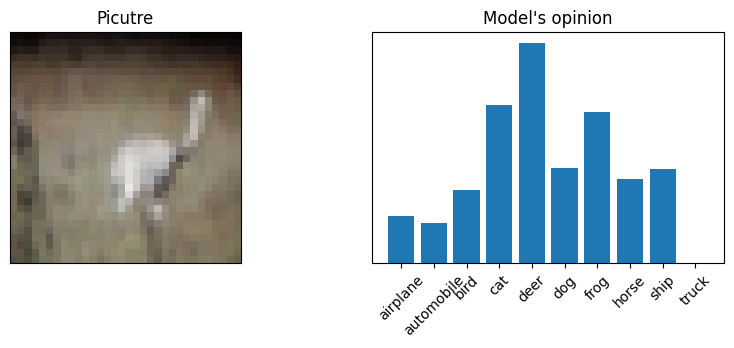
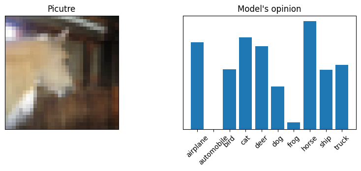
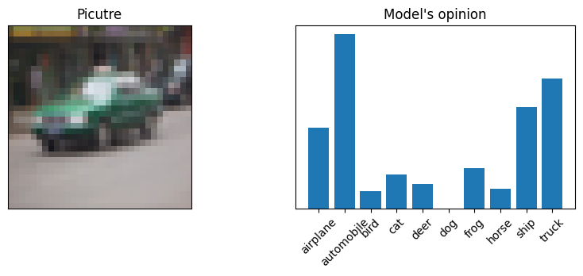

import pickle
import numpy as np
import torch
from torch import nn
from torch.utils.data import DataLoader
import torchvision.transforms as T
from torchvision.datasets import CIFAR10
import matplotlib.pyplot as plt
from IPython.display import clear_output
from tqdm import tqdm
import pickleCNN classification
The process of building a convolutional neural network for image classification is described here.
Data
For this notebook, CIFAR10 is used. So itâs loaded in the following cell.
train_dataset = CIFAR10(
'./cifar10',
train=True,
transform=T.ToTensor(),
download = True
)
valid_dataset = CIFAR10(
'./cifar10',
train=False,
transform=T.ToTensor(),
download=True
)Files already downloaded and verified
Files already downloaded and verifiedSo here is some pictures each belongs to some class. Below is visualisation that contains random picutres from sample with it classes in title.
np.random.seed(15)
indx = np.random.choice(np.arange(len(train_dataset)), 10)
t = [train_dataset[i] for i in indx]
cifar10_classes = {
0: 'airplane',
1: 'automobile',
2: 'bird',
3: 'cat',
4: 'deer',
5: 'dog',
6: 'frog',
7: 'horse',
8: 'ship',
9: 'truck'
}
plt.figure(figsize = (10, 5))
for i in range(len(indx)):
plt.subplot(1, len(indx), i + 1)
plt.title(cifar10_classes[t[i][1]])
plt.imshow(T.ToPILImage()(t[i][0]))
plt.xticks([]);plt.yticks([])
There are some tricks at the data level:
- Both training and validation data need to be better normalised;
- For the training data, we added some augmentations that usually make the model more robust.
means = (train_dataset.data / 255).mean(axis=(0, 1, 2))
stds = (train_dataset.data / 255).std(axis=(0, 1, 2))
train_transforms = T.Compose(
[
T.AutoAugment(T.AutoAugmentPolicy.CIFAR10),
T.ToTensor(),
T.Normalize(mean=means, std=stds)
]
)
test_transforms = T.Compose(
[
T.ToTensor(),
T.Normalize(mean=means, std=stds)
]
)
train_dataset = CIFAR10(
'./cifar10',
train=True,
transform=train_transforms,
download = True
)
valid_dataset = CIFAR10(
'./cifar10',
train=False,
transform=test_transforms,
download=True
)Files already downloaded and verified
Files already downloaded and verifiedArchitecture
I borrowed the architecture from this notebook.
class SimpleResidualBlock(nn.Module):
def __init__(self):
super().__init__()
self.conv1 = nn.Conv2d(
in_channels=3,
out_channels=3,
kernel_size=3,
stride=1,
padding=1
)
self.relu1 = nn.ReLU()
self.conv2 = nn.Conv2d(
in_channels=3,
out_channels=3,
kernel_size=3,
stride=1,
padding=1
)
self.relu2 = nn.ReLU()
def forward(self, x):
out = self.conv1(x)
out = self.relu1(out)
out = self.conv2(out)
return self.relu2(out) + x
def conv_block(in_channels, out_channels, pool=False):
layers = [
nn.Conv2d(in_channels, out_channels, kernel_size=3, padding=1),
nn.BatchNorm2d(out_channels),
nn.ReLU(inplace=True)
]
if pool: layers.append(nn.MaxPool2d(2))
return nn.Sequential(*layers)
class Model(nn.Module):
def __init__(self, in_channels, num_classes):
super().__init__()
self.conv1 = conv_block(in_channels, 64)
self.conv2 = conv_block(64, 128, pool=True)
self.res1 = nn.Sequential(
conv_block(128, 128),
conv_block(128, 128)
)
self.conv3 = conv_block(128, 256, pool=True)
self.conv4 = conv_block(256, 512, pool=True)
self.res2 = nn.Sequential(
conv_block(512, 512),
conv_block(512, 512)
)
self.classifier = nn.Sequential(
nn.MaxPool2d(4),
nn.Flatten(),
nn.Linear(512, num_classes)
)
def forward(self, xb):
out = self.conv1(xb)
out = self.conv2(out)
out = self.res1(out) + out
out = self.conv3(out)
out = self.conv4(out)
out = self.res2(out) + out
out = self.classifier(out)
return outFitting
Here is everything we needed to make the model fit. Everything is quite simple except learning the scheduler. Itâs a tool that allows to reduce the steps of the optimiser to get better optimisation results.
device = torch.device('cuda:0' if torch.cuda.is_available() else 'cpu')
# model = Model().to(device)
model = Model(3, 10).to(device)
optimizer = torch.optim.Adam(model.parameters(), lr=1e-3)
scheduler = torch.optim.lr_scheduler.StepLR(optimizer, step_size=15, gamma = 0.5)
loss_fn = nn.CrossEntropyLoss()
train_loader = DataLoader(
train_dataset,
batch_size=256,
shuffle=True,
num_workers=4,
pin_memory=True
)
valid_loader = DataLoader(
valid_dataset,
batch_size=256,
shuffle=False,
num_workers=4,
pin_memory=True
)
def train(model) -> tuple[float, float]:
model.train()
train_loss = 0
total = 0
correct = 0
for x, y in tqdm(train_loader, desc='Train'):
x, y = x.to(device), y.to(device)
optimizer.zero_grad()
output = model(x)
loss = loss_fn(output, y)
train_loss += loss.item()
loss.backward()
optimizer.step()
_, y_pred = torch.max(output, 1)
total += y.size(0)
correct += (y_pred == y).sum().item()
train_loss /= len(train_loader)
accuracy = correct / total
return train_loss, accuracy
@torch.inference_mode()
def evaluate(model, loader) -> tuple[float, float]:
model.eval()
total_loss = 0
total = 0
correct = 0
for x, y in tqdm(loader, desc='Evaluation'):
x, y = x.to(device), y.to(device)
output = model(x)
loss = loss_fn(output, y)
total_loss += loss.item()
_, y_pred = torch.max(output, 1)
total += y.size(0)
correct += (y_pred == y).sum().item()
total_loss /= len(loader)
accuracy = correct / total
return total_loss, accuracy
def plot_stats(
train_loss: list[float],
valid_loss: list[float],
train_accuracy: list[float],
valid_accuracy: list[float],
title: str
):
plt.figure(figsize=(15, 18))
plt.subplot(211)
plt.title(title + ' loss')
plt.plot(train_loss, label='Train loss')
plt.plot(valid_loss, label='Valid loss')
plt.legend()
plt.grid()
plt.subplot(212)
plt.title(title + ' accuracy')
plt.plot(train_accuracy, label='Train accuracy')
plt.plot(valid_accuracy, label='Valid accuracy')
plt.legend()
plt.grid()This model fitting requires a noticeable amount of computation, but we have calculated everything and saved the results, the next cell just shows the code used for training.
history = {
"train_loss" : [],
"valid_loss" : [],
"train_accuracy" : [],
"valid_accuracy" : []
}for epoch in range(50):
train_loss, train_accuracy = train(model)
valid_loss, valid_accuracy = evaluate(model, valid_loader)
history["train_loss"].append(train_loss)
history["valid_loss"].append(valid_loss)
history["train_accuracy"].append(train_accuracy)
history["valid_accuracy"].append(valid_accuracy)
clear_output()
plot_stats(
history["train_loss"], history["valid_loss"],
history["train_accuracy"], history["valid_accuracy"],
"Learning curves"
)
plt.show()
scheduler.step()torch.save(model.state_dict(), open("cnn_classification_files/mod.pck", "wb"))
pickle.dump(history, open("cnn_classification_files/fit_history.pck", "wb"))Here is plotted learning curves for model. As you can see the final accuracy is 90%.
history = pickle.load(open("cnn_classification_files/fit_history.pck", "rb"))
plot_stats(
history["train_loss"], history["valid_loss"],
history["train_accuracy"], history["valid_accuracy"],
"Learning curves"
)
final_accuracy = history["valid_accuracy"][-1]
plt.axhline(final_accuracy, color="gray", linestyle="--")
plt.yticks(list(plt.yticks()[0]) + [round(final_accuracy, 2)])
plt.show()Playing with model
Letâs check models accruraby but not with strickt metric, but with our eyes. Sometimes itâs ever for numan hard to understand what exactly displayed on 32x32 piture. So letâs see what model thinks but not strict classes, but the ratio of model certainties in different classes.
Here is fitted model so you can just download it and do what ever you want.
model = Model(3, 10)
with open("cnn_classification_files/mod.pck", "rb") as f:
model.load_state_dict(torch.load(f, map_location=torch.device('cpu')))
model = model.eval()
no_transform_valid = CIFAR10(
'./cifar10',
train=False,
download=True
)
indx = np.random.choice(np.arange(len(no_transform_valid)), 10)
predicts = model(
torch.stack(
[train_transforms(no_transform_valid[i][0]) for i in indx]
)
)
predicts
for n, i in enumerate(indx):
plt.figure(figsize = (10, 3))
plt.subplot(121)
plt.title("Picutre")
plt.imshow(no_transform_valid[i][0])
plt.xticks([]); plt.yticks([])
plt.subplot(122)
plt.title("Model's opinion")
plt.bar(
cifar10_classes.values(),
(predicts[n] + predicts[n].min().abs()).detach().numpy()
)
plt.xticks(rotation = 45);plt.yticks([])
plt.show()Files already downloaded and verified


